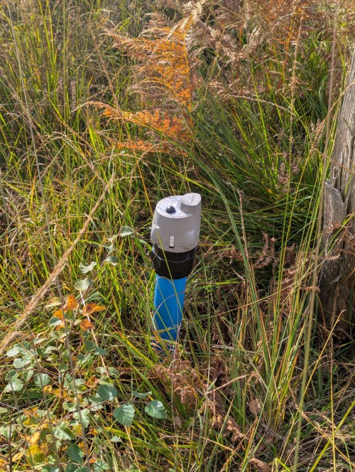
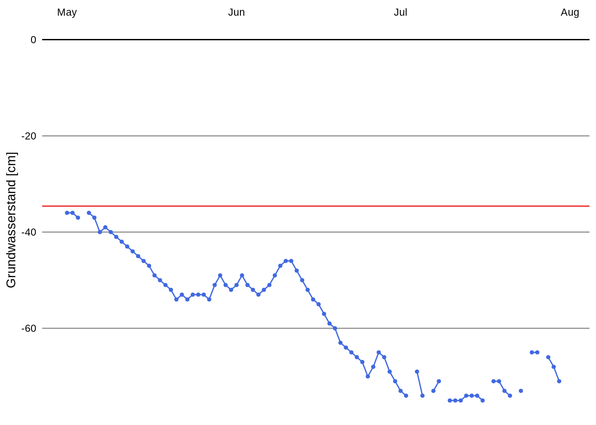
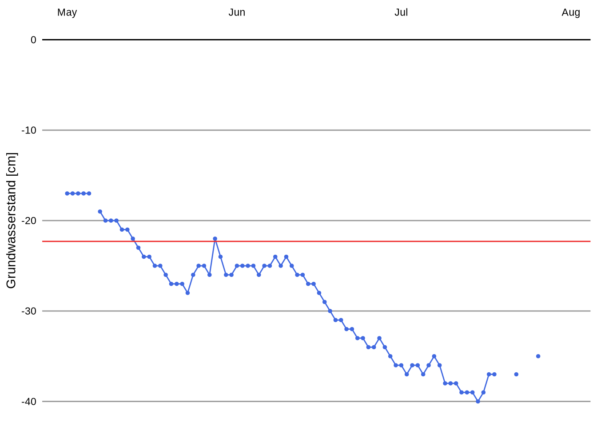

Aamsveen/Hündfelder Moor - Monitoring Report 2025
Zweck des Monitoringberichts
Im Zuge des LIFE Projekt LifeCrossBorderBog wird das Gebiet Aamsveen/Hündfelder Moor im Kreis Borken an der Deutsch-Niederländischen Grenze renaturiert. Verschiedene Baumaßnahmen sollen Bedingungen schaffen, die langfristig das eigenständige Wachstum von Torfmoosen ermöglichen. Wichtigstes Ziel der Baumaßnahmen ist es den Grundwasserstand im Gebiet dauerhaft anzuheben. Dazu wurden im Projekt Soll-Grundwasserstände definiert die durch die Baumaßnahmen erreicht werden sollen. Um den Erfolg der Maßnahmen im Projekt LifeCrossBorderBog zu evaluieren, wurde deshalb schon vor Beginn der ersten Bauphase Messstellen eingerichtet die den Grundwasserstand im Gebiet ermitteln. Im folgenden Monitoringbericht wird 1. das eingesetze Dauerbeobachtungssystem beschrieben und 2. der Ist-Zustand des Grundwasserstands vor der Renaturierungsmaßnahme evaluiert.
Technische Grundlagen
Die Grundwasser-Messtellen die von der Biologischen Station Zwillbrock betrieben werden bestehen aus einem 2-Zoll Rohr, welches im Moorkörper verankert wurde und mit einem Tekelek TEK766 (Produktseite des Herstellers) Ultaschall Sensor ausgestattet ist (siehe Figure 1). Alle 6 Stunden wird der Abstand vom Sensorkopf zur Wasseroberfläche per Ultraschall gemessen und zusammen mit der Qualität der Messung via LoRa (Long Range Wide Area) an ein Gateway übermittelt, welches die Messung dann in einen Online Cloud Dienst sendet.
Beschreibung der Grundwasser Dauerbeobachtung
Im Projektgebiet sind insgesamt 69 Grundwasser-Messstellen eingerichtet. 51 davon im Hündfelder Moor die von der Biologischen Station Zwillbrock betrieben werden. 18 weitere werden von der Bezirksverwaltung Overijssel betrieben wovon 14 Messstellen auf Niederländischer Seite im Aamsveen und 4 auf Deutscher Seite eingerichtet sind.
mapview::mapview(gwsHeader, zcol = "Betreiber", legend.title = "Messstellen")Grundwasserstand vor der Renaturierunsmaßnahme
gwsStats |> mapview(zcol = "GWSmedian")Ist-GWS im Vergleich zu Soll-GWS
gwsStats |> mapview(zcol = "GWS_Differenz")Ausgewählte Beispiele

